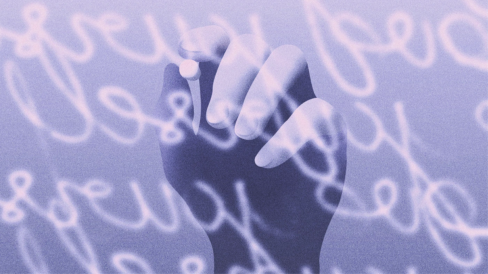

Intelligence Artificielle
Comprendre l'IA, ses enjeux et son usage dans l'enseignement. Définitions, enjeux sociétaux, éthiques, environnementaux, et zoom sur les IA génératives comme ChatGPT.
Focus sur l'Intelligence Artificielle
Réseaux Sociaux
Typologies, enjeux, impact et pratiques pédagogiques. Des plateformes aux algorithmes, de la désinformation aux influenceurs — et comment enseigner à l'ère des réseaux sociaux.
Focus sur les Réseaux Sociaux
Cyberharcèlement
Définitions, chiffres, dispositifs de prévention et cadre légal. Tout pour comprendre, détecter et prendre en charge le harcèlement en ligne dans l'enseignement obligatoire et supérieur.
Focus sur le CyberharcèlementImpact environnemental
Comprendre l'empreinte numérique, agir à l'échelle de l'école et éduquer les élèves à la sobriété numérique. Chiffres, concepts clés et éco-gestes concrets.
Focus sur l'EnvironnementCrédits & auteurs
Service général du Numérique Éducatif · Fédération Wallonie-Bruxelles
-
Intelligence ArtificielleRédaction Lionel Hellin, Claude Van OpstalGraphisme Laura Maugeri
-
Réseaux SociauxRédaction Laurence Ilunga, David NyssenGraphisme Laura Maugeri
-
CyberharcèlementRédaction Inès De Corte, Mélanie CornezGraphisme Laura Maugeri
-
Impact environnementalRédaction L. Coulon, N. Dubisy, J. El Hasnnaoui, F. Ernalsteen, C. Van OpstalGraphisme Laura Maugeri
Ces documents ont été entièrement rédigés par des humains et présentent des éléments de réflexion en l'état des connaissances à leur date de publication.

Ces ressources sont publiées sur e-classe.be
Plateforme officielle du Service général du Numérique Éducatif de la Fédération Wallonie-Bruxelles. Retrouvez l'ensemble des publications et ressources pédagogiques en ligne.